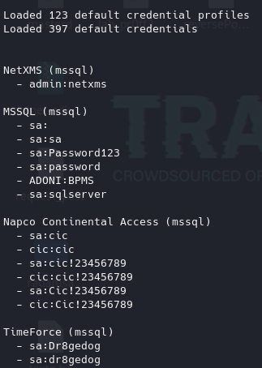

HERRAMIENTAS ÚTILES PARA DIFERENTES TIPOS DE AUDITORÍAS.
ChangeMe
https://github.com/ztgrace/changeme
Se dedica a buscar contraseñas por defecto en diferentes servicios establecidos en nuestra infraestructura de red.
sudo apt install changeme
Para ver las credenciales por defecto de los servicios que soporta:
changeme --dump

Para verificar todos los host de la infraestructura:
changeme 192.168.20.0/24
changeme 192.168.20.133
Puede generar tráfico intrusivo
Gitleaks:
https://github.com/gitleaks/gitleaks
Identifica leaks en repositorios.
Si en algún momento en algún repositorio hubo algún fichero o contraseña que posteriormente se eliminase este quedaba registrado en el historial y esta herramienta lo consigue.
Recorre todos los archivos actuales y todos los del historial.
sudo apt install gitleaks
Para probarla podemos dirigirnos al repositorio de mutillidae
https://github.com/webpwnized/mutillidae
git clone https://github.com/webpwnized/mutillidae
Dentro del directorio
gitleaks detect -v
CyberCheff:
https://github.com/gchq/CyberChef
Es una aplicación web que podemos montar en un entorno privado y que sirve para hacer transformaciones con todo lo relacionado con hacking de aplicaciones web.